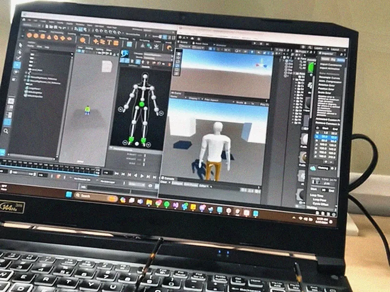
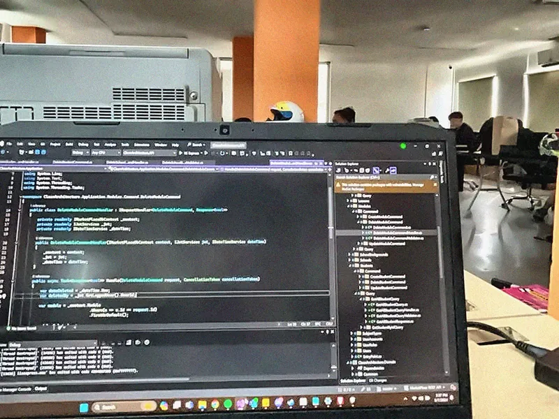
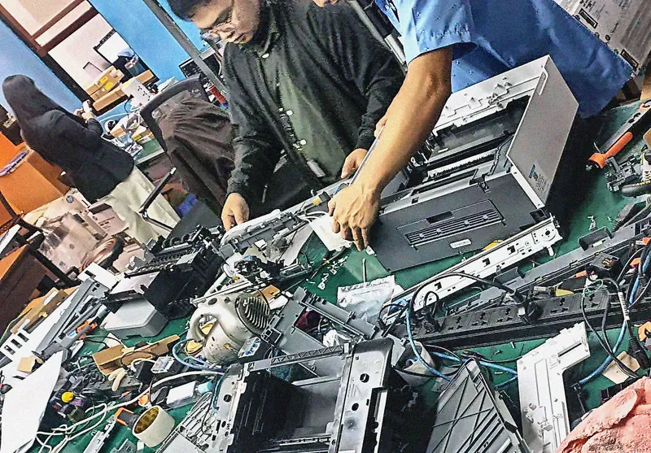
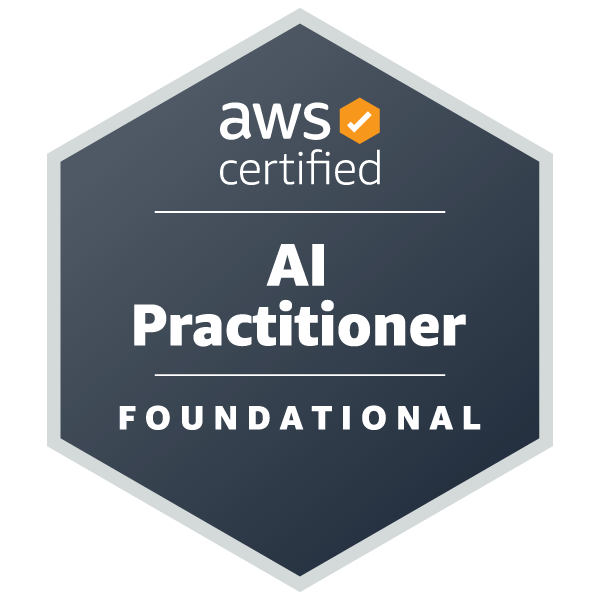
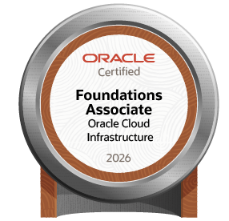
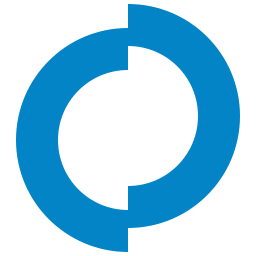

-
ChildhoodWhere curiosity began
Windows XP was my introduction to computing. I had access to a laptop and a desktop, and clicking through menus, exploring programs, and figuring out how they worked made me want to learn more.
-

Senior high schoolTurning curiosity into knowledge
I took the Information and Communications Technology strand at AMA. It was my first formal introduction to IT and gave me a foundation for the things I’d been exploring on my own.
-
2019Bridging creativity and technology
I enrolled at FEU Institute of Technology for a BS in Information Technology, specializing in Animation and Game Development. I liked that making something interactive gave me a reason to learn both design and code.
- Creative practice
- Adobe Creative Suite, Autodesk Maya, and Blender for 3D assets, animation, and digital design.
- Software development
- Unity and C# for game logic, alongside Node.js, React, and Python.
- IT fundamentals
- Networking, system administration, scripting, and infrastructure.

Unity and C# for interactive projects - Unity and C# for interactive projects gave me my first real programming.
Certifications earned in these years
- CCNA: Introduction to NetworksCisco, December 2021
- Information Technology Specialist in DatabasesCertiport, January 2022
- CCNA: Switching, Routing, and Wireless EssentialsCisco, April 2022
- CyberOps AssociateCisco, November 2022
- Autodesk Certified User: MayaAutodesk, November 2023
- NDG Linux EssentialsCisco Networking Academy, 2023
-
2024From coursework to a development team
Before graduating, I spent six months at TechFactors Inc. as a back-end C# programming intern. I worked on REST APIs and server-side logic and learned how a development team turns requirements into working software.

TechFactors Inc., Quezon City · January to July 2024 - Developed in C# across the back end, including REST API work, and on the front end of company applications.
- Gained hands-on exposure to the full software development workflow alongside the development team.
-
February 2025A new beginning
I earned my Bachelor of Science in Information Technology at FEU Institute of Technology, specializing in Animation and Game Development. I was ready to take what I’d learned into my first full-time IT role.
-
May to November 2025Entering the world of IT infrastructure
I started in IT Support at the HP Service Center through Actionlabs IT Services. After regularization, I was promoted to L2 Field Onsite Engineer, troubleshooting enterprise hardware and supporting users at client sites. I later stepped away from the role.
IT SupportL2 Field Onsite Engineer

HP Service Center / Actionlabs IT Services · May to November 2025 - Installed, repaired and troubleshot HP printers, POS systems, laptops and workstations at multiple sites.
- Installed operating systems and resolved hardware and software faults in enterprise environments.
- Diagnosed user issues on site, set expectations with clients and partners, and documented resolutions.
-
2026Upskilling and finding direction
During my career break, I kept learning and earned certifications in IT support and networking. In July 2026 I returned to IT as an HRIS Technical Support professional at First Maritime Shared Services, helping seafarers and office staff. Alongside that work, I pursued cloud certifications and started applying what I learned in projects.
 AWS Certified Cloud Practitioner CLF-C02
AWS Certified Cloud Practitioner CLF-C02
AWS Certified AI Practitioner AIF-C01
OCI Foundations Associate OCI AI Foundations Associate
OCI AI Foundations Associate
- Resolve user-reported issues in the HRIS and escalate complex cases.
- Support the HRIS implementation with the vendor, including data gathering and template completion.
- Built a template tracker that automates and monitors implementation progress: HRIS Template Completion Tracker.
- Document procedures and known fixes to speed up issue resolution.
Also in 2026
- Cisco Networking BasicsJanuary 2026
- Google IT Support, and System Administration and IT Infrastructure ServicesFebruary 2026
- ECCM websiteA church website with a custom domain
- PinansyalPHFree money calculators for Filipinos, November 2026
- SchedriftPresentation-ready Gantt charts from Microsoft Project files, November 2026
-
 ResolveA browser extension and dashboard for voluntary accountability.
ResolveA browser extension and dashboard for voluntary accountability.
OpsentraAn AWS incident response console.- BayanihanDRDisaster recovery drills with Terraform and AWS.
 Teolohiya.siteA listing platform for Christian books in the Philippines.
Teolohiya.siteA listing platform for Christian books in the Philippines.- SchedriftInteractive Gantt charts and schedule delay simulations.
NowBuilding toward the cloud
I’m working toward a Cloud Engineer role. Building and deploying projects gives me a way to practice the work I want to do, from hosting a book listing site to testing how a service recovers after an outage.
From curiosity to the cloud.
Seven chapters, from a childhood fascination with computers to IT support, enterprise HRIS and the AWS projects I build today.
- Now
- HRIS Technical Support
- Learning
- AWS and cloud infrastructure
- Goal
- Cloud Engineer